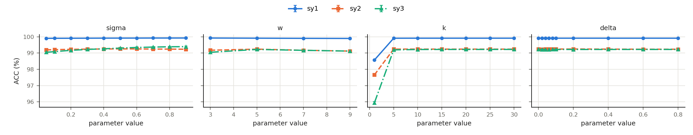
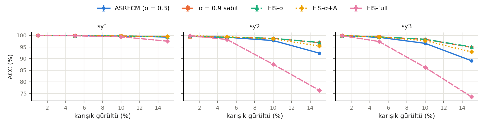

Özet—Wu vd. (Expert Systems with Applications, 2024) tarafından önerilen, tamamlayıcı uzamsal bilgiye dayalı uyarlamalı seyrek düzenlileştirilmiş bulanık C-ortalamalar yöntemini sıfırdan yeniden gerçekleştiriyor ve makalenin ana deneylerini üç sentetik görüntü ile sekiz BSDS500 görüntüsü üzerinde yeniden üretiyoruz. FCM temel yöntemimiz makalede raporlanan FCM sonuçlarını ortalama 0.63 doğruluk puanı farkla yakalıyor; yeniden gerçekleştirilen yöntem %5 karışık gürültüye kadar makaleyle ortalama 0.11 puan içinde kalıyor, %15 gürültüde ise 8.2 puana kadar düşük kalıyor. Bu süreçte makalenin altı belirsizliğini ve tutarsızlığını belgeliyoruz; bunlar arasında Kappa değerlerinin doğruluğun sabit bir ölçeklemesi olması ve yayımlanan parametrelerle yerel-olmayan ortalama adımının bir ortalama filtresi gibi davranması var. Geliştirme olarak makalenin piksel başına kapalı formdaki güven katsayılarını dokuz EĞER–İSE kuralından oluşan açık bir Mamdani bulanık çıkarım sistemiyle değiştiriyor; üyelik fonksiyonu şekillerini, durulaştırma yöntemlerini ve bir Sugeno varyantını karşılaştırıyoruz. Önceden kayda geçirilen kural tabanı yöntemi iyileştirmedi: yüksek gürültüde anlamlı biçimde kötüydü (sy2/sy3'te %15 gürültüde 15.5–16.0 doğruluk puanı), keşifsel bir varyant ise düşük gürültüde yalnız küçük kazançlar sağladı. Bu başarısızlığın analizine dayanan, ayrı bir ayar kümesi kullanan ve önceden kayda geçirilen ikinci iterasyon, yerel terimin ödül katsayısı σ'yı görüntü düzeyindeki bir gürültü tahmininden belirleyen üç kurallı bir Mamdani sistemi ekliyor. Bu sistem doğruluğu %10 ve %15 gürültüde +0.92 ve +3.59 puan artırıyor (p < 0.001), düşük gürültüde kayba yol açmıyor ve yeniden üretim farkının çoğunu kapatıyor; sabit σ = 0.9 ile yapılan kontrol, kazancın kural tabanının kendisinden değil σ'nın uyarlanmasından geldiğini gösteriyor. Gürültülü piksele duyulan güven sınırlandığında ilk kural tabanı da artık hiçbir ayarda makalenin formülünden kötü değil.
Anahtar Kelimeler—bulanık C-ortalamalar, görüntü bölütleme, bulanık çıkarım sistemi, yeniden üretilebilirlik, çift ağaçlı karmaşık dalgacık dönüşümü, seyrek düzenlileştirme.
I. Giriş
Bölütleme bir görüntüyü homojen bölgelere ayırır ve pek çok görme sisteminin temel adımıdır. Bulanık C-ortalamalar (fuzzy C-means, FCM) [2] bu iş için yaygındır, çünkü her piksele kesin bir etiket yerine her kümeye bir üyelik derecesi atar; ancak pikselleri gri düzey uzayında bağımsız noktalar olarak ele aldığı için gürültüye çok duyarlıdır [1]. Uzun bir çalışma dizisi FCM'ye uzamsal bilgi ekler [8]–[23]. Bu projenin referans makalesi Wu vd. [1] dört fikri birleştirir: (i) komşuların gri düzey sırasına göre altın oranlı bir ödül kümesine ve bir ceza kümesine ayrıldığı yerel kestirim ξ, (ii) çift ağaçlı karmaşık dalgacık (DTCWT) alanında yerel-olmayan ortalama ile elde edilen yerel-olmayan kestirim ϑ, (iii) özgün değeri iki kestirime karşı tartan piksel başına α, β, γ katsayıları ve (iv) üyelik matrisinin sert eşikleme ile çözülen ℓ0 seyrek düzenlileştirmesi. Makale FCM'ye ve sekiz başka yönteme göre büyük kazançlar raporlar.
Bu proje ders yönergesini izler: makaleyi incelemek, yeniden gerçekleştirmek, deneylerinden en az birini yeniden üretmek, yöntemi geliştirmek ve geliştirmeyi kontrollü deneylerle temel yönteme karşı değerlendirmek. Katkılarımız şunlardır:
- FCM'nin ve yöntemin tamamının birim testli, bağımsız ve açık kaynak bir gerçekleştirimi; makalenin şekillerinden yeniden oluşturulan test verisi (sentetik görüntüler ve BSDS500 referans bölütlemeleri) ve yeterince tanımlanmamış karışık gürültü modelinin doğrulanmış bir yorumu;
- [1]'in Tablo 1–9'unun her ayarda 10 tohumla yeniden üretilmesi ve farkların analizi; buna makalenin belgelenmiş altı belirsizliği ya da tutarsızlığı da dahildir (Bölüm IX);
- kapalı formdaki güven katsayılarını açık bir Mamdani bulanık çıkarım sistemiyle [30] değiştiren bir geliştirme: deneylerden önce sabitlenen hipotezler, üyelik fonksiyonlarının, durulaştırma yöntemlerinin ve bir Sugeno varyantının [31] karşılaştırılması, dört gürültü türü için dayanıklılık deneyleri ve dürüstçe raporlanan olumsuz bir sonuç;
- bu sonucun teşhis edilen nedenlerini hedefleyen (ödül katsayısı σ için bir bulanık kural, gürültülü piksele sınırlı güven ve bir dürtü girdisi), ayrı gürültü örnekleri üzerinde ayarlanan ve tek sefer test edilen, önceden kayda geçirilmiş ikinci bir iterasyon.
II. İlgili Çalışmalar
Yerel uzamsal bilgi. BCFCM [8] FCM amaç fonksiyonuna ilk kez bir komşuluk terimi ekledi; FCM_S1/S2 [9] bunun yerine önceden filtrelenmiş görüntüler ve bir çekirdek uzaklığı kullandı; FGFCM [10] uzamsal ve gri düzey benzerliğini birleştirip gri düzey histogramını kümeledi. FLICM [11] parametresiz bir bulanık etken getirdi ve KWFLICM [13] ile ADFLICM'e [14] yol açtı. FRFCM [15] morfolojik yeniden yapılandırma [6] ve üyelik filtrelemesi kullanır, DSFCM_N [16] gürültüyü seyrek bir sapma olarak modeller, FCM_SICM [18] ise iki yönlü filtreleme ve üyelik bağlama kullanır. [1]'de belirtildiği gibi bu işlemler esasen komşuluğun ortalamasını alır; komşuların çoğu bozulmuşsa bu ortalama yanlıdır.
Yerel-olmayan ve bölge düzeyi bilgi. Yerel-olmayan ortalamayı [5] izleyerek FCM_SNLS [12] benzer yamalara sahip piksellerden bilgi toplar. FALRCM [20] medyan üyeliklerle bölge düzeyi bilgi ekler, FSC_LNML [22] ise bulanık alt uzay kümelemeyi uyarlamalı yerel varyans, yerel-olmayan bilgi ve üyelik bağlama ile birleştirir. Jiao vd. [24] bölgesel ve yerel filtrelemeden ağırlıklı bir görüntü oluşturur ve bunun özgün görüntüyle dengesini piksel başına uyarlar.
Dönüşüm alanı ve seyreklik. WFCM [17] bir dalgacık çerçevesi alanında kümeleme yapar; SRFCM [19] morfolojik yeniden yapılandırma ve üyeliklerin seyrek düzenlileştirmesini ekler ve bunu bir Lagrange adımı, eşikleme ve normalizasyonla çözer — [1]'in benimsediği şema budur. Chen vd. [25] bulanık kümeleme içinde seyrek öz-temsil kullanır.
Diğer yönler. Güncel çalışmalar bulanık bölmelemenin kendisini değiştirir [27], bulanık kümelemeyi derin ağlarla birleştirir [26] ya da K'yı otomatik kestirir [28]. Bu yöntemler arasında yerel, yerel-olmayan, dalgacık alanı, seyrek ve piksel başına uyarlamalı bileşenleri birleştiren tek çalışma [1]'dir; en yakın akrabaları SRFCM [19] ve FSC_LNML'dir [22]. Hiçbiri piksel başına ağırlıklandırmayı açık bir bulanık kural tabanı olarak ifade etmez; geliştirmemizin hedeflediği boşluk budur.
III. Kuramsal Altyapı
A. Bulanık kümeler ve bulanık çıkarım
X evreni üzerindeki bir bulanık küme A, μA: X → [0,1] üyelik fonksiyonu (membership function) ile tanımlanır [29]. Bir Mamdani sistemi [30] keskin girdileri dört adımda keskin çıktılara dönüştürür: bulanıklaştırma (her girdinin dilsel terimlerindeki üyelik dereceleri), kural değerlendirme (“EĞER x1 A VE x2 B İSE z C” kuralının ateşlenme derecesi min(μA(x1), μB(x2))), çıkarım ve birleştirme (her sonuç kümesi ateşlenme derecesinde kırpılır, kırpılmış kümeler max ile birleştirilir) ve birleşik μ(z) kümesinin durulaştırılması (defuzzification): ağırlık merkezi ∫zμ(z)dz/∫μ(z)dz, alanın açıortayı ya da maksimumların ortalaması. Sıfırıncı derece Takagi–Sugeno sisteminde [31] sonuçlar cr sabitleridir ve çıktı Σwrcr/Σwr olur.
B. Bulanık C-ortalamalar
FCM [2], N gri değeri yj'yi ci merkezli K bulanık kümeye şu ifadeyi en küçükleyerek ayırır:
Burada m > 1 bulanıklaştırıcıdır. Dönüşümlü eniyileme uij = 1/Σr(|yj−ci|/|yj−cr|)2/(m−1) ve ci = Σjuijmyj/Σjuijm güncellemelerini verir; her adım J'yi artıramaz. Her küme pikseller üzerinde bir bulanık kümedir; keskin bölütleme argmaxi uij ile durulaştırılarak elde edilir.
C. DTCWT ve yerel-olmayan ortalama
DTCWT [4], çıktıları karmaşık katsayıların gerçel ve sanal kısımlarını oluşturan iki gerçel dalgacık ağacı kullanır; kaymaya neredeyse duyarsızdır ve altı yönü (±15°, ±45°, ±75°) ayırır. Yerel-olmayan ortalama [5] her değeri bir arama penceresindeki değerlerin ağırlıklı ortalamasıyla değiştirir; ağırlıklar çevreleyen yamalar arasındaki Gauss ağırlıklı uzaklıkla azalır.
IV. Özgün Yöntem

Yerel bilgi ξ ([1], Alg. 2). w×w bir pencerede i pikselinin NR−1 komşusu sıralanır; ortadaki ⌈0.618(NR−1)⌉ komşu ödül kümesini, diğerleri ceza kümesini oluşturur. Sij = exp(−(xj−xi)²/τi²), τi² = Σp(xp−xi)²/NR olmak üzere ağırlıklar SSij = (1±σ)Sij·exp(−dij), kestirim ξi = ΣjSSijxj/ΣjSSij'dir; dij uzamsal uzaklıktır.
Yerel-olmayan bilgi ϑ. Görüntü tek düzeyli DTCWT ile ayrıştırılır; S×S arama penceresi, w×w yamalar, standart sapması υ olan Gauss yama ağırlıkları ve g·w² süzme parametresiyle yerel-olmayan ortalama yedi alt görüntünün hepsine uygulanır ([1], Denk. 10–11); ters dönüşüm ϑ'yı verir.
Uyarlamalı katsayılar. ΔG1 = k·exp(yj−ξj) ve ΔG2 = k·exp(yj−ϑj) ile αj = 1/(ΔG1+ΔG2), βj = ΔG1, γj = ΔG2. Kestirimlerinden farklı olan bir piksel kendi değerine daha az güven alır.
Seyrek düzenlileştirilmiş FCM ([1], Alg. 3). Amaç fonksiyonu şudur:
Her iterasyon ci = Σjuijm(αjyj+βjξj+γjϑj)/Σjuijm(αj+βj+γj) merkezlerini ve dij'den FCM türü ηij üyeliklerini hesaplar, ηij < √δ olanları sıfırlar ve sütunları yeniden normalize eder. Parametreler: w = 5, S = 15, υ = 4, g = 10, σ = 0.3, k = 15, δ = 0.4, m = 2, ε = 10−6, T = 100.
Bulanık sistem görünümü. Girdiler y, ξ ve ϑ'dır; her küme üyelik fonksiyonu uij olan bir bulanık kümedir; çıkarım mekanizmasının rolünü (2)'nin en küçüklenmesi üstlenir (“ağırlıklı uzaklıkta ci'ye yakın bir piksel i kümesine güçlü biçimde aittir”); durulaştırma argmax'tır. Yöntemde açık bir kural tabanı yoktur — geliştirmemizin çıkış noktası budur.
V. Yeniden Gerçekleştirme Yöntemi
Gerçekleştirim. Her şey yazarların kodu kullanılmadan Python 3.12 ile (NumPy, SciPy, OpenCV, dtcwt) yazıldı. Her modül birim testlerine sahip (97 test): örneğin vektörleştirilmiş yerel-olmayan ortalama Denk. 10–11'in doğrudan kodlanmış hâline eşittir, [1]'in Şekil 1'indeki çözümlü örneğin ödül/ceza kümeleri birebir yeniden üretilir ve ek terimler kapatıldığında seyrek yöntem tam olarak FCM'ye indirgenir. Belirli bir tohum için FCM ve önerilen yöntem aynı rastgele başlangıç üyeliklerini paylaşır.
Veri. Sentetik görüntüler yayımlanmamış olduğundan [1]'in Şekil 9'unun rasterini çıkardık, her paneli 256×256'ya yeniden boyutlandırdık ve her pikseli ölçülen gri düzeylerin en yakınına atadık (sy1: 0/255, K = 2; sy2: 0/107/255, K = 3; sy3: 0/107/222, K = 3). BSDS500 [7] için makale Şekil 22'de gösterilen sadeleştirilmiş 2–4 sınıflı referanslara göre değerlendirme yapar; bunları aynı yolla yeniden oluşturduk ve insan bölütlemeleriyle doğruladık (bölgeler birleştirildikten sonra %93.5–99.7 uyum). Renkli görüntüler BT.601 ağırlıklarıyla griye çevrilir.
Gürültü. [1] “eşit oranlarda Gauss, tuz-biber ve çarpımsal gürültü” tanımlar ama düzeyin tanımını vermez. %p karışık gürültüyü sırasıyla p varyanslı Gauss gürültüsü, ardından benek (p varyanslı çarpımsal düzgün) gürültü, ardından p yoğunluklu tuz-biber gürültüsü olarak okuyoruz. Bu okumayla FCM'miz makalede raporlanan FCM'yi ortalama 0.63 ACC puanı farkla yeniden üretiyor (Bölüm VIII-A); bu da yorumu destekliyor.
Ölçütler. VPC, VPE (U'dan), ACC, F-skoru (makro ortalama), NMI ve Kappa (etiket haritasından). Kümeler sınıflarla Macar algoritmasıyla eşlenir. Cohen kappa değerini raporluyoruz; makaleyle karşılaştırma için onun Kappa değerlerinin karşılık geldiği ölçeklenmiş ACC'yi de hesaplıyoruz (Bölüm IX).
Yorum seçimleri. Tablo I sonuçları etkileyen kararları listeliyor; hepsi kanıtlarıyla birlikte report/decisions.md dosyasında kayıtlı.
| Belirsizlik | Seçimimiz |
|---|---|
| Sentetik görüntüler | sy1–sy3, [1]'in Şekil 9'undan çıkarıldı, 256×256 |
| BSDS500 referans bölütleme | [1]'in Şekil 22'sindeki 2–4 sınıflı haritalar çıkarıldı; K = 2,3,3,3,4,2,2,2 |
| Karışık gürültü %p | Gauss (varyans p) → benek (varyans p) → tuz-biber (yoğunluk p) |
| Ödül kümesi boyutu | [1]'in Şekil 1'indeki gibi ⌊0.618(NR−1)⌋ (metin: ⌈·⌉, ablasyonda) |
| Denk. 10 | basılı yj yerine yq |
| NLM yoğunluk ölçeği | [0,1] (Alg. 3 adım 1), h² = g·w², normalize yama çekirdeği |
| Karmaşık alt bantlar | ağırlıklar genlikten, gerçel ve sanal kısımlara uygulanır |
| Denk. 15–16 | basıldığı gibi işaretli exp(y−ξ); |y−ξ| ablasyonda |
| Eşik sonrası boş sütun | o pikselin η'si korunur (raporlanan VPC'yi verir) |
| Etiket eşleme | Macar algoritması; F-skor makro ortalama; Cohen kappa |
VI. Önerilen Geliştirme: Yöntemin Ağırlıkları için Mamdani Kural Tabanları
A. Birinci iterasyon: güven katsayıları için bir kural tabanı
Motivasyon. k = 15 ve [0,1] aralığındaki gri değerlerle ΔG [5.5, 40.8] aralığındadır; bu yüzden neredeyse her pikselde α ≈ 0.01–0.1 ve β ≈ γ olur, iki kestirim her zaman aynı ağırlığı alır. Yeniden üretimimiz bunların farklı yerlerde başarısız olduğunu gösteriyor: yayımlanan parametrelerle yerel-olmayan adım her alt bantta neredeyse 15×15'lik bir ortalama filtresi gibi çalışıyor (düz bölgelerde güçlü, kenarlarda bulanıklaştırıcı); ξ ise kenarlara duyarlı ama yoğun gürültüde daha zayıf. Bir kural tabanı bu tür bilgiyi açıkça ifade edebilir, incelenebilir ve yöntemi bulanık çıkarıma bağlar.
Tasarım (deneylerden önce sabitlendi). Piksel başına iki girdi: Dev = |y − (ξ+ϑ)/2| (uzlaşıdan sapma; büyükse büyük olasılıkla gürültü) ve Dis = |ξ − ϑ| (kestirimlerin anlaşmazlığı; büyükse büyük olasılıkla kenar). [0,1] üzerinde Küçük/Orta/Büyük terimleri (üçgen/yamuk; aynı kesişim noktalarına sahip Gauss varyantı); Düşük/Orta/Yüksek terimli α, β, γ çıktıları (Şekil 2). Dokuz kural Tablo II'de veriliyor; çıkarım min/min/max ve ağırlık merkezi durulaştırması kullanıyor, çıktılar her pikselde α+β+γ = 1 olacak şekilde normalize ediliyor. Sıfırıncı derece Sugeno sürümü aynı kuralları, çıkış terimlerinin ağırlık merkezlerini sabit olarak kullanarak çalıştırıyor. FIS her görüntü için bir kez değerlendiriliyor.
| Kural | Dev | Dis | α | β | γ |
|---|---|---|---|---|---|
| R1 | Küçük | Küçük | Yüksek | Orta | Orta |
| R2 | Küçük | Orta | Yüksek | Orta | Düşük |
| R3 | Küçük | Büyük | Yüksek | Orta | Düşük |
| R4 | Orta | Küçük | Orta | Orta | Yüksek |
| R5 | Orta | Orta | Orta | Yüksek | Orta |
| R6 | Orta | Büyük | Orta | Yüksek | Düşük |
| R7 | Büyük | Küçük | Düşük | Yüksek | Yüksek |
| R8 | Büyük | Orta | Düşük | Yüksek | Orta |
| R9 | Büyük | Büyük | Düşük | Yüksek | Düşük |

Hipotezler (CP4, koşulardan önce kayda geçti). H1: FIS, sy2/sy3'te %10–15 gürültüde ACC'yi artırır ve %1–5'te en fazla 0.5 puan kaybettirir. H2: BSDS500 görüntülerinde de ortalama ACC'yi artırır. H3: üyelik şekli ve durulaştırma ACC'yi bir puandan az değiştirir. H4: Sugeno, Mamdani-ağırlık merkezinin bir puan yakınındadır. Keşifsel varyant. İlk koşular önceden kayıtlı FIS'in (“full”) gürültülü piksele toplam güvenin yaklaşık %30'unu verdiğini gösterince (makale: yaklaşık %0.1), sonradan tam olarak bir varyant ekledik: “split”, makalenin α'sını ve toplam β+γ güvenini koruyor, FIS'i yalnızca bu güveni ξ ile ϑ arasında paylaştırmak için kullanıyor. Sonuçlara bakarak başka hiçbir varyant ayarlanmadı.
B. İkinci iterasyon: bulanık ödül katsayısı (önceden kayıtlı)
Teşhis. Birinci iterasyon ölçülen iki nedenle başarısız oldu (Bölüm IX): kural tabanı gürültülü piksele güvenin yaklaşık %30'unu bırakıyor ve girdileri, ξ gürültülü olduğunda kenarı gürültüden ayıramıyor. Tek etkenli ablasyon (Bölüm VIII-E) ayrıca yerel terimin ödül katsayısı σ'nın yüksek gürültüdeki davranışı belirlediğini gösteriyor: düşük gürültüde σ = 0.3 yeterli, yüksek gürültüde daha büyük bir σ çok daha iyi. Sabit bir sayı her görüntüye uymaz; bu, bir kural tabanı için doğal bir görevdir: görüntü ne kadar gürültülüyse her penceredeki uç değerler o kadar güçlü cezalandırılmalı.
Adaylar. (A) α çıkış aralığı makalenin formülünün ürettiği aralığa daraltılmış ilk kural tabanı (çarpan 0.002, iki α payının medyan oranı); (B) “EĞER Imp Büyük VE Dis … İSE α Düşük” kurallarıyla üçüncü bir girdi Imp = |y − medyan3×3(y)|; (C) tek girdili bir Mamdani sistemi: girdi, en ince köşegen Haar katsayılarından elde edilen görüntü düzeyindeki gürültü tahmini median(|HH|)/0.6745 (gürültünün standart sapmasının dayanıklı bir tahmini: düz bölgeler HH = 0 verir, Gauss gürültüsünde median|n| = 0.6745σn), terimler Düşük/Orta/Yüksek; çıktı σ, terimler Küçük/Orta/Büyük; üç kural Düşük→Küçük, Orta→Orta, Yüksek→Büyük (Şekil 3), görüntü ya da piksel düzeyinde; ve bunların bileşimleri.
Protokol (CP6, her adımdan önce commit'lendi). Adaylar yalnızca 100–104 tohumlarında (başka hiçbir yerde kullanılmayan gürültü örnekleri) ve tümü kayda geçirilen 12 konfigürasyonluk bir bütçeyle ayarlandı; ayar ACC ortalaması en yüksek olan varyant önceden sabitlenen bir kuralla seçildi; seçilen varyant ve hipotezler, 0–9 test tohumlarındaki tek koşudan önce commit'lendi. B ve C fikirleri test tohumlarındaki gözlemlerden geldiği için test, bu fikirlerin parametrelerine kördür ama fikrin kendisine kör değildir. 9 konfigürasyon kullanıldı: A ve A+B yalnızca split varyantı düzeyine ulaştı (A: %96.70, makale katsayıları: %97.74), B tek başına 93.98, C varyantları 98.84–98.85, en büyük çıkış terimi 0.95'e çekildiğinde ise %98.88 — seçilen varyant FIS-σ. Sabit σ = 0.9 %98.85 verdi. C+A bileşimi (%98.56) ayar kümesinde hiçbir seviyede makale katsayılarının altına düşmedi ve ikincil varyant FIS-σ+A olarak ilan edildi.

Hipotezler (D-045). H5: FIS-σ, %10 ve %15 gürültüde makale ayarlarından daha yüksek ortalama ACC verir (30 görüntü–tohum çifti üzerinde eşleştirilmiş Wilcoxon, p < 0.05) ve %1 ile %5'te hiçbir yerde 0.5 puandan fazla düşük değildir. H5-kontrol (beklenen sıfır sonucu): FIS-σ ile sabit σ = 0.9 her karışık gürültü ayarında 0.5 puandan az farklıdır; kuralın sabit değere üstünlüğü ancak başka gürültü türlerinde, düşük gürültüde ya da doğal görüntülerde ortaya çıkabilir. H6: FIS-σ+A hiçbir yerde makale ayarlarının altında değildir.
VII. Deney Düzeni
Sentetik görüntüler: %1, %5, %10 ve %15 karışık gürültü; BSDS500: %5; dayanıklılık: %0–20 Gauss, benek, tuz-biber ve karışık gürültü. Her ayar 10 tohumla koşuldu; bir tohum gürültü örneğini ve tüm yöntemlerin paylaştığı başlangıç üyeliklerini sabitler. Ortalama ± standart sapma ile tohumlar üzerinde eşleştirilmiş iki yönlü Wilcoxon işaretli sıra testlerini (α = 0.05) raporluyoruz. E1–E3 Tablo 2–8'i (FCM ve önerilen yöntem) ve Tablo 1'deki ablasyonu yeniden üretir; E4 Şekil 10–13'teki parametre çalışmasını tekrarlar; E5 geliştirmeyi değerlendirir (ana karşılaştırma, FIS varyantları, gürültü türüne göre dayanıklılık, makalenin keyfî seçimlerinin tek etkenli ablasyonu); E6 sekiz BSDS500 görüntüsünü kullanır; E7 çalışma süresini başka iş yapmayan bir dizüstü işlemcide ölçer (Windows 11, AMD64 CPU, tek çekirdek, Python 3.12.0); E8 ikinci iterasyondur (ayar tohumları 100–104; test tohumları 0–9 ile sentetik ızgara, %0–20'de dört gürültü türü ve gri ile renkli BSDS500; ek kontrol olarak sabit σ = 0.9). Tüm tablo ve şekiller koşu bazındaki CSV dosyalarından betiklerle üretilir.
VIII. Sonuçlar
A. FCM'nin yeniden üretimi (E1)
FCM'miz Tablo 2–8'deki makalede raporlanan FCM sütununu yakından yeniden üretiyor: 12 görüntü/gürültü ayarı üzerindeki ortalama mutlak fark 0.63 ACC puanı (en fazla 1.85), 1.37 NMI puanı, 0.47 VPC puanı ve 0.85 VPE puanı; FCM'miz ortalama 4.6 daha az iterasyona ihtiyaç duyuyor (Tablo III, Şekil 4). FCM'nin m, ε ve T dışında parametresi olmadığından bu uyum esas olarak yeniden oluşturulan görüntüleri ve gürültü modeli yorumumuzu doğruluyor.
B. Önerilen yöntemin yeniden üretimi (E2)
%5 gürültüye kadar yöntemin gerçekleştirimimiz makaleyi ortalama 0.11 ACC puanı içinde yeniden üretiyor ve FCM'yi 35.2 puana kadar iyileştiriyor. Üç sınıflı görüntülerde %10–15 gürültüde raporlanandan daha düşük kalıyor (ortalama fark 3.02 puan, en büyük fark 8.2), daha fazla iterasyon gerektiriyor ve NMI değeri daha hızlı düşüyor (Tablo III, Şekil 4). Bölüm VIII-E'deki tek etkenli ablasyon nedeni buluyor: makalenin kendi çözümlü örneklerinin ima ettiği değer olan σ = 0.9 ödül katsayısıyla (Bölüm IX) yüksek gürültüdeki fark belirgin biçimde küçülüyor.
| Görüntü | Gürültü % | FCM bizim | FCM makale | ASRFCM bizim | ASRFCM makale |
|---|---|---|---|---|---|
| sy1 | 1 | 99.50 | 99.49 | 99.99 | 99.89 |
| sy1 | 5 | 95.24 | 95.20 | 99.91 | 99.86 |
| sy1 | 10 | 85.95 | 86.18 | 99.72 | 99.75 |
| sy1 | 15 | 77.56 | 77.97 | 99.34 | 99.56 |
| sy2 | 1 | 97.52 | 97.82 | 99.58 | 99.43 |
| sy2 | 5 | 77.14 | 77.16 | 99.24 | 99.22 |
| sy2 | 10 | 67.22 | 67.75 | 97.82 | 99.04 |
| sy2 | 15 | 61.89 | 62.68 | 92.38 | 98.53 |
| sy3 | 1 | 96.22 | 95.87 | 99.95 | 99.84 |
| sy3 | 5 | 72.90 | 74.75 | 99.22 | 99.43 |
| sy3 | 10 | 61.42 | 62.61 | 96.62 | 98.91 |
| sy3 | 15 | 55.66 | 57.45 | 89.13 | 97.36 |

e2_asrfcm_vs_paper.png, e1_fcm_vs_paper.png).C. Ablasyon (E3)
Tablo IV, [1]'in Tablo 1'ini tekrarlıyor (%5 gürültü). Makaledeki gibi en etkili tek bileşen yerel-olmayan terim (tek başına ACC %97.5–99.6); üç bileşen birlikte en iyi ya da en iyiyle eşit (sy1/sy2/sy3'te ACC 99.91 / 99.24 / 99.22; makale %99.52) ve seyrek adım çoğu konfigürasyonda VPC'yi yaklaşık %99'a çıkarıp iterasyon sayısını düşürüyor. Makaleden farklı olarak, bizim koşularımızda yerel terim tek başına da güçlü (raporlanan %82.26'ya karşı ACC %97.5–99.9). Makalenin hiçbir bileşen içermeyen satırı, yani düz FCM, Tablo 2–8'deki kendi FCM sonuçlarıyla uyuşmuyor (Bölüm IX).
| Bileşenler | ACC bizim | ACC makale | V_PC bizim | V_PC makale | İter. bizim | İter. makale |
|---|---|---|---|---|---|---|
| yok (FCM) | 72.90 | 75.10 | 83.85 | 70.58 | 36.5 | 20 |
| S | 72.90 | 82.48 | 94.62 | 94.74 | 35.4 | 24 |
| NL | 98.77 | 99.47 | 92.25 | 95.83 | 15.5 | 13 |
| NL+S | 98.75 | 99.42 | 97.81 | 99.24 | 15.8 | 13 |
| L | 97.48 | 82.26 | 88.79 | 87.51 | 21.4 | 17 |
| L+S | 97.47 | 78.49 | 97.66 | 94.99 | 16.8 | 19 |
| L+NL | 99.22 | 99.50 | 89.31 | 96.08 | 15.9 | 12 |
| L+NL+S | 99.22 | 99.52 | 99.19 | 99.26 | 12.7 | 11 |
D. Parametre duyarlılığı (E4)
%5 gürültüde yöntem σ, w ve δ'ya duyarsız (Şekil 5): σ ∈ [0.05, 0.9], w ∈ {3, 5, 7, 9} ve δ ∈ [0, 0.8] aralıklarında her görüntünün ACC değeri en fazla sırasıyla 0.35, 0.17 ve 0.02 puan değişiyor. [1]'in Şekil 10'undan farklı olarak ACC σ = 0.4'ün üzerinde düşmüyor; sy3'te σ = 0.9'a kadar hafifçe artıyor (99.22 → %99.39), bu da Bölüm VIII-E ile tutarlı. k ≥ 5 için ACC kararlı (aralık 0.03 puan), k = 1 ise düşürüyor (sy3: %95.94); bu, makalenin k'nın 5'ten büyük olması gerektiği ifadesiyle uyumlu. Seyreklik katsayısı esas olarak yakınsamayı belirliyor: sy3'te iterasyon sayısı seyreklik yokken (δ = 0) 15.9, en düşük değeri 11.1 (δ = 0.2); daha büyük δ değerlerinde yeniden artıyor (makalenin δ = 0.4 değerinde 12.7).

E. Makalenin seçimlerinin tek etkenli ablasyonu (E5, C2)
Tablo V'te her seferinde tek bir seçim değiştiriliyor. En büyük etki ödül katsayısından geliyor: σ = 0.9 ile %15 gürültüde ACC yükseliyor (sy2: 92.38 → %96.88, sy3: 89.13 → %94.88); makalede raporlanan değerlerle fark 6.1/8.2 puandan 1.7/2.5 puana iniyor ve %15'teki iterasyon sayısı düşüyor (27.1 → 17.6). Altın oranın özel bir yanı yok: ρ = 0.5 aynı ya da biraz daha yüksek ACC veriyor, 0.7 ve 0.8 ise yüksek gürültüde daha kötü; ödül kümesi boyutunun yuvarlanması neredeyse fark yaratmıyor. Denk. 15–16'da mutlak fark, basılı işaretli farktan %15'te daha iyi (sy3: 91.59 ve %89.13). Boş sütunları keskinleştirmek (argmax) VPC'yi %100'e zorluyor ve sy2'de %5'te ACC kaybettiriyor (96.11 ve %99.24); yerel-olmayan ortalamayı 0–255 ölçeğinde çalıştırmak %15'te belirgin biçimde daha kötü (sy3: %80.05).
| Varyant | sy1 5% | sy1 15% | sy2 5% | sy2 15% | sy3 5% | sy3 15% | İter. 15% |
|---|---|---|---|---|---|---|---|
| makale ayarları | 99.91 | 99.34 | 99.24 | 92.38 | 99.22 | 89.13 | 27.1 |
| ρ = 0.5 | 99.91 | 99.36 | 99.23 | 92.36 | 99.22 | 89.39 | 26.4 |
| ρ = 0.7 | 99.91 | 99.31 | 99.24 | 92.11 | 99.21 | 88.60 | 27.0 |
| ρ = 0.8 | 99.91 | 99.22 | 99.25 | 91.30 | 99.16 | 87.06 | 29.0 |
| ⌈·⌉ ödül boyutu | 99.91 | 99.32 | 99.24 | 92.32 | 99.21 | 88.79 | 27.3 |
| σ = 0.6 | 99.92 | 99.47 | 99.25 | 95.36 | 99.34 | 92.66 | 20.4 |
| σ = 0.9 | 99.92 | 99.54 | 99.23 | 96.88 | 99.39 | 94.88 | 17.6 |
| Denk. 15–16'da |y−ξ| | 99.91 | 99.41 | 99.08 | 92.86 | 99.24 | 91.59 | 23.1 |
| boş sütun: argmax | 99.91 | 99.34 | 96.11 | 92.13 | 99.22 | 89.09 | 25.1 |
| NLM 0–255 ölçeğinde | 99.94 | 98.21 | 99.12 | 83.46 | 98.66 | 80.05 | 28.8 |
F. Önerilen geliştirme (E5)
Tablo VI ve Şekil 6 yöntemi makale katsayılarıyla ve iki bulanık kural varyantıyla, aynı gürültü örnekleri ve başlangıç değerleri üzerinde karşılaştırıyor. H1 reddedildi. Önceden kayıtlı FIS (“full”) sy2 ve sy3'te %10 ve %15 gürültüde makale katsayılarından anlamlı biçimde kötü (%15'te 15.5–16.0 puan), %5'te ise biraz kötü. Keşifsel “split” varyantı %5'e kadar temel yönteme yakın ve birkaç düşük gürültü ayarında küçük ama anlamlı kazançlar sağlıyor (FIS-full, sy2, %1 (+0.35); FIS-split, sy2, %1 (+0.32); FIS-split, sy2, %5 (+0.15)), ancak sy2/sy3'te %15'te yine 3.8–5.2 puan kaybettiriyor. Tablo VII tüm sentetik ayarları ders yönergesinin istediği biçimde özetliyor.
| Görüntü | Gürültü % | FCM | ASRFCM (makale katsayıları) | +FIS full | +FIS split | Δ full | Δ split |
|---|---|---|---|---|---|---|---|
| sy1 | 1 | 99.50 ± 0.03 | 99.99 ± 0.00 | 99.99 ± 0.00 | 99.99 ± 0.00 | +0.00 | +0.00 |
| sy1 | 5 | 95.24 ± 0.09 | 99.91 ± 0.02 | 99.88 ± 0.02 | 99.91 ± 0.02 | -0.03* | +0.00 |
| sy1 | 10 | 85.95 ± 0.17 | 99.72 ± 0.03 | 99.43 ± 0.03 | 99.66 ± 0.03 | -0.28* | -0.05* |
| sy1 | 15 | 77.56 ± 0.17 | 99.34 ± 0.04 | 97.57 ± 0.11 | 98.76 ± 0.07 | -1.77* | -0.58* |
| sy2 | 1 | 97.52 ± 0.06 | 99.58 ± 0.02 | 99.92 ± 0.01 | 99.90 ± 0.01 | +0.35* | +0.32* |
| sy2 | 5 | 77.14 ± 0.21 | 99.24 ± 0.04 | 98.29 ± 0.06 | 99.38 ± 0.04 | -0.95* | +0.15* |
| sy2 | 10 | 67.22 ± 0.22 | 97.82 ± 0.09 | 87.59 ± 0.37 | 96.25 ± 0.10 | -10.23* | -1.57* |
| sy2 | 15 | 61.89 ± 0.18 | 92.38 ± 0.19 | 76.37 ± 0.25 | 88.63 ± 0.23 | -16.01* | -3.75* |
| sy3 | 1 | 96.22 ± 0.06 | 99.95 ± 0.01 | 99.90 ± 0.01 | 99.96 ± 0.01 | -0.05* | +0.00 |
| sy3 | 5 | 72.90 ± 0.17 | 99.22 ± 0.04 | 97.41 ± 0.05 | 99.11 ± 0.05 | -1.81* | -0.11* |
| sy3 | 10 | 61.42 ± 0.23 | 96.62 ± 0.12 | 86.24 ± 0.34 | 94.13 ± 0.17 | -10.37* | -2.48* |
| sy3 | 15 | 55.66 ± 0.21 | 89.13 ± 0.35 | 73.59 ± 0.45 | 83.94 ± 0.39 | -15.54* | -5.19* |
| Ölçüt | Temel (ASRFCM-paper) | Geliştirilen (FIS-full) | Değişim (FIS-full) | Geliştirilen (FIS-split) | Değişim (FIS-split) |
|---|---|---|---|---|---|
| ACC | 97.74 ± 3.33 | 93.02 ± 9.27 | -4.73 | 96.64 ± 5.02 | -1.11 |
| F | 97.40 ± 3.76 | 92.05 ± 10.55 | -5.35 | 96.00 ± 5.94 | -1.40 |
| NMI | 90.32 ± 11.35 | 79.45 ± 22.06 | -10.87 | 87.29 ± 15.29 | -3.03 |
| Kappa (Cohen) | 95.98 ± 5.72 | 87.95 ± 15.69 | -8.03 | 94.05 ± 8.61 | -1.93 |
| Kappa (makalenin tanımı) | 94.94 ± 7.51 | 84.35 ± 20.88 | -10.59 | 92.46 ± 11.32 | -2.48 |
| V_PC | 97.75 ± 3.06 | 94.85 ± 5.55 | -2.90 | 97.83 ± 2.77 | +0.08 |
| V_PE | 3.61 ± 4.96 | 8.30 ± 9.05 | +4.69 | 3.46 ± 4.46 | -0.15 |
| İterasyon | 16.38 ± 9.76 | 22.13 ± 15.73 | +5.76 | 17.51 ± 11.29 | +1.13 |
| 256×256 görüntü başına süre (s, E7) | 0.79 | 2.08 | +1.30 | 2.10 | +1.31 |

FIS varyantları (H3, H4). Üçgen kümeleri Gauss kümeleriyle, ağırlık merkezini açıortayla ya da Mamdani'yi sıfırıncı derece Sugeno ile değiştirmek ACC'yi “full” için en fazla 0.54, “split” için en fazla 0.43 puan değiştiriyor (Tablo VIII); yani bu seçimler için H3 tutuyor, Sugeno da Mamdani-ağırlık merkezinin 0.43 puan yakınında kalıyor (H4 tutuyor). İstisna maksimumların ortalaması: daha kaba çıktıları güven karşıtlığını azaltıyor ve “full”un gürültülü piksele aşırı güvenini kısmen telafi ediyor (%15'te +2.94 puan). α+β+γ'nın normalize edilmesinin ACC'ye etkisi yok; bu beklenen bir durum, çünkü bir pikselin üyelikleri yalnızca kendi uzaklıklarının oranlarına bağlı.
| Varyant | sy2 5% | sy2 15% | sy3 5% | sy3 15% |
|---|---|---|---|---|
| ASRFCM-paper | 99.24 | 92.38 | 99.22 | 89.13 |
| full tri centroid | 98.29 | 76.37 | 97.41 | 73.59 |
| full gauss centroid | 98.25 | 76.38 | 97.35 | 73.40 |
| full tri bisector | 98.36 | 76.68 | 97.53 | 74.13 |
| full tri mom | 98.63 | 79.10 | 97.90 | 76.53 |
| full tri sugeno | 98.43 | 76.50 | 97.57 | 73.96 |
| full unnormalised | 98.29 | 76.37 | 97.41 | 73.57 |
| split tri centroid | 99.38 | 88.63 | 99.11 | 83.94 |
| split gauss centroid | 99.38 | 88.74 | 99.12 | 84.08 |
| split tri bisector | 99.39 | 88.61 | 99.12 | 83.85 |
| split tri mom | 99.37 | 88.17 | 99.09 | 82.87 |
| split tri sugeno | 99.39 | 88.38 | 99.10 | 83.51 |
G. Gürültü türüne dayanıklılık (E5, C1)
Şekil 7 karışık gürültünün bileşenlerini ayırıyor (değerler: sy1–sy3 ortalaması, %20'de FCM → yeniden gerçekleştirilen yöntem). Tuz-biber (88.3 → %99.3) ve benek gürültüsü (88.1 → %99.4) neredeyse tamamen gideriliyor: dürtüler sıralanmış komşuluğun uçlarında kalıp ceza kümesine düşüyor, benek gürültüsü ise koyu bölgelere dokunmuyor. Gauss gürültüsü daha zor (70.1 → %97.3), bileşimleri ise açıkça en zor durum (60.8 → %86.9): yöntem her bileşenle tek başına iyi başa çıkıyor ama aynı parametredeki toplamlarıyla başa çıkamıyor. Gürültüsüz görüntülerde yöntem FCM'nin biraz altında (99.9 ve %100.0), çünkü uzamsal terimler ince yapıları yumuşatıyor; tutarlı piksellere güvenen önceden kayıtlı FIS burada %100.0 veriyor ve %1 gürültüde de daha iyi (ör. Gauss: 100.0 ve %99.9). Kural tabanının tasarlandığı rejim budur; gürültü arttıkça piksele duyduğu güven bir zaafa dönüşüyor (Gauss %20: %88.1). Split varyantı %10'a kadar dürtü ve benek gürültüsünde makale katsayılarına eşit ya da biraz daha iyi (tuz-biber %10: 99.8 ve %99.8), yüksek yoğunluklu Gauss ve karışık gürültüde geride kalıyor.

H. Gerçek görüntüler (E6)
Sekiz BSDS500 görüntüsünde (gri düzey protokolü, Tablo IX) yeniden gerçekleştirilen yöntem ortalama ACC'yi belirgin biçimde yükseltiyor: FCM 57.87 → yöntem %79.85 (makalede: 69.28 → %87.36). Bizim FCM değerimiz makaledekinden düşük, çünkü makale renkli görüntüleri kümelemiş (Bölüm IX). H2 reddedildi: bulanık kural varyantları ortalama ACC'yi artırmıyor (full %72.04, split %78.70). Renkli tekrarda D-043'teki en küçük çok kanallı genellemeyi kullanıyoruz (ξ ve ϑ kanal başına, RGB'de Öklid uzaklığı, kanal ortalamalı farklardan piksel başına tek α, β, γ; gürültü her kanala ayrı ekleniyor). Renkli görüntülerde FCM'miz makaledeki FCM ile 8 görüntüden 7 tanesinde iki puan içinde örtüşüyor (ortalama 68.38 ve %69.28); yeniden gerçekleştirilen yöntemin ortalaması %85.29 (makalede %87.36), FIS varyantlarınınki 82.25 (full) ve %84.84 (split).
| Görüntü | K | FCM | ASRFCM | +FIS full | +FIS split | FCM (RGB) | ASRFCM (RGB) | +FIS full (RGB) | +FIS split (RGB) | FCM makale | ASRFCM makale |
|---|---|---|---|---|---|---|---|---|---|---|---|
| 100007 | 2 | 57.82 | 79.86 | 77.98 | 79.71 | 65.92 | 80.69 | 81.11 | 80.88 | 65.96 | 80.83 |
| 118035 | 3 | 54.77 | 84.70 | 72.30 | 83.24 | 72.09 | 93.92 | 92.56 | 93.72 | 73.08 | 96.24 |
| 167062 | 3 | 77.14 | 98.02 | 80.07 | 93.61 | 79.18 | 95.09 | 75.61 | 92.34 | 78.86 | 98.87 |
| 201080 | 3 | 42.27 | 54.06 | 49.18 | 54.49 | 62.07 | 83.74 | 82.85 | 83.65 | 62.72 | 85.12 |
| 241004 | 4 | 44.80 | 72.82 | 63.96 | 72.12 | 59.82 | 73.32 | 76.67 | 73.43 | 60.36 | 73.16 |
| 42049 | 2 | 67.96 | 90.49 | 89.18 | 90.27 | 77.71 | 91.62 | 91.25 | 91.58 | 81.67 | 96.36 |
| 67079 | 2 | 60.52 | 80.81 | 76.15 | 79.83 | 68.02 | 82.94 | 80.78 | 82.59 | 68.67 | 85.06 |
| 86016 | 2 | 57.64 | 78.06 | 67.51 | 76.34 | 62.21 | 80.99 | 77.14 | 80.54 | 62.89 | 83.26 |
| ortalama | 57.87 | 79.85 | 72.04 | 78.70 | 68.38 | 85.29 | 82.25 | 84.84 | 69.28 | 87.36 |

I. İkinci iterasyon (E8)
Tablo X ve Şekil 9 tek test koşusunu veriyor. H5 tuttu. 30 görüntü–tohum çifti üzerinde FIS-σ ortalama ACC'yi %10'da +0.92, %15'te +3.59 puan artırıyor (ikisinde de p < 0.001); %15'te sy2/sy3'te makale ayarlarıyla elde edilen %92.38/89.13 yerine %97.00/95.08 değerine ulaşıyor ve makalede raporlanan %98.53/97.36 değerine yaklaşıyor; %1 ve %5'teki en büyük kaybı -0.01 puan. Kural %1, %5, %10 ve %15 gürültüde sırasıyla σ ≈ 0.38, 0.66, 0.92 ve 0.94 seçiyor. H5-kontrol tuttu: FIS-σ ile sabit σ = 0.9 on iki ayarda -0.02 … +0.19 puan farklı; yani bu ızgarada kazanç, bulanık çıkarımın kendisinden değil, kuralın otomatik olarak seçtiği daha büyük σ'dan geliyor. H6 tuttu: FIS-σ+A hiçbir yerde makale ayarlarının altında değil (en kötü fark +0.00) ve FIS-σ'dan farklı olarak düşük gürültüde anlamlı biçimde daha iyi (%1 ve %5'te +0.11 ve +0.13 puan; sy2, %1: %99.89 ve %99.57): orada tutarlı bir piksel kendi değerini daha çok koruyor; %15'te ise FIS-σ'dan daha az kazandırıyor (+2.34 ve +3.59). Tablo XI yönerge biçimindeki özeti veriyor.
| Görüntü | Gürültü % | ASRFCM (σ = 0.3) | σ = 0.9 sabit | FIS-σ (Δ) | FIS-σ+A (Δ) |
|---|---|---|---|---|---|
| sy1 | 1 | 99.99 ± 0.00 | 99.99 ± 0.00 | 99.99 (+0.00) | 99.99 (+0.00) |
| sy1 | 5 | 99.91 ± 0.02 | 99.92 ± 0.01 | 99.92 (+0.01*) | 99.92 (+0.01*) |
| sy1 | 10 | 99.72 ± 0.03 | 99.77 ± 0.02 | 99.77 (+0.06*) | 99.77 (+0.05*) |
| sy1 | 15 | 99.34 ± 0.04 | 99.54 ± 0.03 | 99.55 (+0.21*) | 99.48 (+0.13*) |
| sy2 | 1 | 99.58 ± 0.02 | 99.51 ± 0.01 | 99.57 (-0.01*) | 99.89 (+0.31*) |
| sy2 | 5 | 99.24 ± 0.04 | 99.23 ± 0.03 | 99.25 (+0.01) | 99.47 (+0.23*) |
| sy2 | 10 | 97.82 ± 0.09 | 98.77 ± 0.06 | 98.77 (+0.95*) | 98.54 (+0.71*) |
| sy2 | 15 | 92.38 ± 0.19 | 96.88 ± 0.07 | 97.00 (+4.61*) | 95.47 (+3.08*) |
| sy3 | 1 | 99.95 ± 0.01 | 99.96 ± 0.01 | 99.96 (+0.00*) | 99.96 (+0.00*) |
| sy3 | 5 | 99.22 ± 0.04 | 99.39 ± 0.05 | 99.37 (+0.15*) | 99.37 (+0.15*) |
| sy3 | 10 | 96.62 ± 0.12 | 98.34 ± 0.08 | 98.38 (+1.76*) | 97.76 (+1.14*) |
| sy3 | 15 | 89.13 ± 0.35 | 94.88 ± 0.18 | 95.08 (+5.95*) | 92.94 (+3.81*) |

Test ızgarasının ötesi. Sekiz BSDS500 görüntüsünde FIS-σ ortalama ACC'yi gri görüntülerde 79.85 → %80.98 (sabit σ = 0.9: %80.98), renkli görüntülerde 85.29 → %85.43 yükseltiyor (sabit σ = 0.9: %85.54); FIS-σ+A sırasıyla 80.51 ve %85.39 veriyor. Renkli görüntülerde kural yalnızca σ ≈ 0.56 seçiyor (gri: 0.87), çünkü tahmin kanal ortalaması üzerinde hesaplanıyor ve üç kanalın bağımsız gürültüsü bu ortalamada kısmen sönüyor. %0–20 aralığındaki dört gürültü türünde (depodaki e8_robustness_acc_tr.png şekli) FIS-σ hiçbir ayarda makale ayarlarının 0.05 puandan fazla altında değil ve en çok +6.59 puan daha iyi (karışık %20); sabit σ = 0.9 ile farkı -0.31 ile +0.24 puan arasında, en büyük kayıp tuz-biber %20 ayarında: medyana dayalı tahmin seyrek dürtüleri görmüyor (Bölüm IX). FIS-σ+A ile makale ayarları arasındaki fark -0.37 ile +4.33 puan (en büyük kayıp: tuz-biber %20).
| Ölçüt | Temel (ASRFCM-paper) | Geliştirilen (FIS-σ) | Değişim (FIS-σ) | Geliştirilen (FIS-σ+A) | Değişim (FIS-σ+A) |
|---|---|---|---|---|---|
| ACC | 97.74 ± 3.33 | 98.88 ± 1.41 | +1.14 | 98.55 ± 2.11 | +0.80 |
| F | 97.40 ± 3.76 | 98.67 ± 1.62 | +1.27 | 98.23 ± 2.54 | +0.83 |
| NMI | 90.32 ± 11.35 | 94.04 ± 5.90 | +3.72 | 92.97 ± 8.16 | +2.64 |
| Kappa (Cohen) | 95.98 ± 5.72 | 97.99 ± 2.39 | +2.01 | 97.41 ± 3.60 | +1.43 |
| Kappa (makalenin tanımı) | 94.94 ± 7.51 | 97.50 ± 3.18 | +2.56 | 96.75 ± 4.75 | +1.81 |
| V_PC | 97.75 ± 3.06 | 98.81 ± 1.50 | +1.05 | 98.80 ± 1.56 | +1.05 |
| V_PE | 3.61 ± 4.96 | 1.91 ± 2.42 | -1.70 | 1.91 ± 2.51 | -1.71 |
| İterasyon | 16.38 ± 9.76 | 13.28 ± 4.84 | -3.10 | 12.89 ± 4.82 | -3.48 |
| 256×256 görüntü başına süre (s, E7) | 0.79 | 0.93 | +0.15 | 1.95 | +1.17 |
J. Çalışma süresi (E7)
256×256 bir görüntüde FCM 0.12 s, yeniden gerçekleştirilen yöntem 0.79 s sürüyor; bunun 0.65 s'si ξ ve ϑ'nın hesabına gidiyor (Tablo XII). Seyrek kümeleme az iterasyonda yakınsadığı için hızlı. α, β, γ için Mamdani FIS 1.22 s ekliyor (her piksel için dokuz kural, 201 noktalı çıkış ızgarasında); sıfırıncı derece Sugeno varyantı bu ızgaraya gerek duymuyor. Bulanık σ kuralı görüntü başına bir kez çalışıyor (üç kural ve bir medyan); ölçülen ön işlem farkları, 256×256 görüntüde +0.14 s ve BSDS500 görüntüsünde +0.00 s, ξ hesabının koşudan koşuya değişimi içinde kalıyor.
| Görüntü | Yöntem | Ön işlem (s) | Kümeleme (s) | Toplam (s) | İter. |
|---|---|---|---|---|---|
| sy3 256×256 | FCM | 0.00 | 0.12 | 0.12 | 40 |
| sy3 256×256 | ASRFCM | 0.65 | 0.13 | 0.79 | 14 |
| sy3 256×256 | FIS-full | 1.87 | 0.21 | 2.08 | 19 |
| sy3 256×256 | FIS-split | 1.93 | 0.17 | 2.10 | 15 |
| sy3 256×256 | FIS-σ | 0.79 | 0.15 | 0.94 | 14 |
| sy3 256×256 | FIS-σ+A | 1.83 | 0.12 | 1.95 | 12 |
| BSDS 321×481 | FCM | 0.00 | 0.16 | 0.16 | 30 |
| BSDS 321×481 | ASRFCM | 2.16 | 0.32 | 2.48 | 18 |
| BSDS 321×481 | FIS-full | 4.81 | 0.42 | 5.23 | 23 |
| BSDS 321×481 | FIS-split | 4.69 | 0.34 | 5.03 | 19 |
| BSDS 321×481 | FIS-σ | 2.16 | 0.35 | 2.51 | 17 |
| BSDS 321×481 | FIS-σ+A | 4.73 | 0.31 | 5.05 | 18 |
IX. Tartışma
Yeniden üretim ne gösteriyor? [1]'in temel iddiaları bizim gerçekleştirimimizde de geçerli: tamamlayıcı yerel ve yerel-olmayan bilgi FCM'yi karışık gürültüye karşı dayanıklı kılıyor, en büyük katkıyı yerel-olmayan terim sağlıyor ve seyrek adım daha az iterasyonla neredeyse keskin üyelikler üretiyor. Yüksek gürültüde kalan fark yöntemin yapısından değil, belirsiz bırakılmış tek bir büyüklükten, ödül katsayısı σ'dan kaynaklanıyor: belirtilen σ = 0.3 ile yerel kestirim yoğun gürültüde zayıf kalıyor; makalenin çözümlü örneklerinin ima ettiği σ ise %15'teki farkı 6.1/8.2 puandan 1.7/2.5 puana indiriyor (sy2/sy3).
[1]'de bulunan belirsizlikler ve tutarsızlıklar. (i) Raporlanan Kappa, Cohen kappa değil: tanımı makalenin kendi ACC/Kappa çiftleriyle şans uyumu için çözüldüğünde Tablo 4 ve 7'nin üç sınıflı her hücresinde ve üç sınıflı BSDS500 görüntülerinde pe = 0.5556 = (1/3)²+(2/3)² çıkıyor, yani Kappa ACC'nin sabit bir ölçeklemesi; bazı iki sınıflı BSDS500 görüntülerinde bu değer değişiyor. (ii) Şekil 2–3'te basılı benzerlik değerleri belirtilen ξ'yi yeniden üretiyor ancak σ = 0.3'e değil yaklaşık 19'luk bir ödül/ceza ağırlık oranına (σ ≈ 0.9) karşılık geliyor ve Denk. 6'ya uymuyor. (iii) [0,1] yoğunlukları ve h² = g·w² = 250 ile her yerel-olmayan ağırlık [0.996, 1] aralığında; dolayısıyla yerel-olmayan ortalama adımı her alt bantta fiilen 15×15'lik bir ortalama filtresi, kenar koruması ise dalgacık ayrıştırmasından geliyor. (iv) δ = 0.4 ile √δ > 0.5; bu yüzden sert eşikten piksel başına en fazla bir üyelik geçiyor; raporlanan VPC/VPE ancak hiçbir üyeliğin geçmediği pikseller eşiklenmemiş üyeliklerini korursa yeniden üretilebiliyor. (v) Tablo 1'in “bileşen yok” satırı Tablo 2–8'deki hiçbir FCM değeriyle eşleşmiyor. (vi) Yöntem gri değerler için tanımlanmış olsa da Tablo 9'daki BSDS500 sonuçları renkli görüntülerin kümelenmesine karşılık geliyor: gürültülü RGB görüntülerde düz FCM, raporlanan FCM doğruluklarını sekiz görüntünün yedisinde bir puan içinde yeniden üretiyor. Makale ayrıca gürültü düzeyini, ödül kümesi yuvarlamasını (metinde yukarı, Şekil 1'de aşağı), pencere boyutunu (Bölüm 4.1'de 7, Bölüm 4.4'te 5) ve etiket eşleme protokolünü belirtmiyor; seçimlerimiz Tablo I'de listeleniyor.
Bulanık kural tabanı neden yardımcı olmadı? Makalenin formülü gürültülü piksele toplam güvenin yalnızca yaklaşık %0.1'ini veriyor; önceden kayıtlı FIS ise yaklaşık %30'unu veriyor, çünkü uzlaşıdan orta düzeyde sapan pikseller “Küçük/Orta sapma” kurallarını ateşliyor ve %15 gürültüde piksellerin neredeyse yarısı bozuk. FIS'i ξ ile ϑ arasındaki paylaştırmayla sınırlamak bu sızıntıyı gideriyor, ancak “kenar” girdisi Dis = |ξ−ϑ| yüksek yoğunlukta gürültüyle karışıyor: ξ'nin kendisi gürültülü olduğunda Dis büyük çıkıyor ve kurallar güveni daha zayıf kestirime kaydırıyor. Başka bir deyişle kural tabanı nitel olarak doğru bilgiyi kodluyor (Şekil 2), ama yerel kestirim güvenilmez hâle geldiğinde girdileri kenarı gürültüden ayıramıyor. Deneyler neyin gerçekten önemli olduğunu da gösteriyor: üyelik fonksiyonlarının ince şekli ya da durulaştırma yöntemi değil, özgün piksele bırakılan güven miktarı ve yerel kestirimin gücü (σ). Önceden sabitlenen protokole uyarak kural tabanını test görüntüleri üzerinde daha fazla ayarlamadık.
İkinci iterasyon ne gösteriyor? Teşhis, sınanabildiği yerlerde doğru çıktı. Gürültülü piksele duyulan güveni sınırlamak ilk kural tabanının kaybını ortadan kaldırdı: tek başına yalnızca split varyantı düzeyine ulaştı, ama daha güçlü bir yerel kestirimle birlikte (FIS-σ+A) hiçbir yerde makalenin formülünden kötü değil ve düşük gürültüde daha iyi. Dürtü girdisi işe yaramadı, çünkü dürtüleri zaten ödül/ceza kümeleri yakalıyor. En büyük etki ödül katsayısından geldi: görüntüden tek bir sayı okuyan üç kurallı bir sistem temiz görüntüler için σ ≈ 0.3, gürültülü görüntüler için σ ≈ 0.9 seçiyor ve böylece kalan yeniden üretim farkının çoğunu kapatıyor. Dürüst bir kayıt düşmek gerekiyor: kontrol deneyine göre karışık gürültüde sabit σ = 0.9 de aynı derecede iyi; yani kuralın değeri en iyi sabit değerden daha yüksek doğruluk sağlamasında değil, σ'yı görüntüye bakarak, elle ayar gerektirmeden seçmesinde yatıyor — 0.9 değerinin kendisi ancak test görüntüleri üzerindeki bir ablasyonla bulunmuştu; gürültüsüz görüntülerde ikisi aynı sonucu veriyor (gürültüsüz görüntüler: FIS-σ %99.89, sabit σ = 0.9 %99.88, makale %99.89). Girdisi de bir sınırlılık: medyana dayalı tahmin doku ve kenarları da gürültü sayıyor, bu yüzden %5 gürültülü dokulu bir doğal görüntü %10 gürültülü sentetik bir görüntü gibi görünüyor (Şekil 3); seyrek dürtüleri ise görmüyor, bu yüzden saf tuz-biber gürültüsünde kural σ = 0.3'te kalıyor ve orada sabit σ = 0.9 biraz daha iyi (%20'de 99.35 ve %99.66).
Mühendislik değeri. Geliştirme, bir bulanık kümeleme yönteminin içinde incelenebilir ve düzenlenebilir bulanık kural tabanları sunuyor; üyelik fonksiyonları, kural ateşlemeleri ve durulaştırma piksel piksel görselleştirilebiliyor (Şekil 2 ve canlı demo). İki iterasyon birlikte yeni girdi değişkenlerini (Dev, Dis, Imp, bir gürültü tahmini), yeni bir çıktıyı (σ), üyelik fonksiyonu şekillerinin, durulaştırma yöntemlerinin ve Mamdani ile Sugeno çıkarımının karşılaştırılmasını, bir kural tabanı değişikliğini, yeni bir senaryoyu (renkli BSDS500), bir dayanıklılık analizini, tek etkenli bir ablasyonu ve hesaplama maliyetini kapsıyor; her biri önceden sabitlenen bir protokolle aynı temel yönteme karşı değerlendirildi.
X. Sınırlılıklar
- Test verisi makalenin şekillerinden yeniden oluşturuldu; kenarlar ve çözünürlük asıllarından farklı, gürültü modelimiz de bir yorum (FCM uyumuyla destekleniyor).
- [1]'deki sekiz karşılaştırma yöntemi yeniden gerçekleştirilmedi; yalnızca FCM ve önerilen yöntem yeniden üretildi.
- Bulanık kural tabanı sentetik görüntülerdeki gözlemlerden tasarlandı ve bu görüntüler ile BSDS500 üzerinde değerlendirildi; eniyilenmedi, farklı bir kural tabanı ya da öğrenilmiş üyelik fonksiyonları farklı davranabilir.
- İkinci iterasyon aynı üç sentetik görüntünün başka gürültü örnekleri üzerinde ayarlandı ve fikirleri test tohumlarındaki gözlemlerden geldi; dokuz konfigürasyon denendi. Karışık gürültüde kazancı sabit σ = 0.9'unkine eşit; görüntü düzeyindeki gürültü tahmini dokuyu gürültüyle karıştırıyor, seyrek dürtüleri görmüyor ve renkli görüntülerde kanal ortalaması üzerinde hesaplanıyor.
- K önceden veriliyor; renkli görüntüler yalnızca Bölüm VIII-H'de anlatılan çok kanallı genellemeyle işleniyor.
- Çalışma süreleri tek bir dizüstü işlemcide Python gerçekleştiriminden geliyor ve [1]'deki MATLAB süreleriyle karşılaştırılamaz.
XI. Sonuç
[1]'deki uyarlamalı seyrek düzenlileştirilmiş bulanık kümeleme yöntemini yeniden gerçekleştirdik ve ana deneylerini her ayarda 10 tohumla yeniden ürettik. FCM ve yöntem düşük ve orta gürültüde makaleyle yakından uyuşuyor; yüksek gürültüdeki fark belirsiz bırakılmış ödül katsayısıyla açıklanıyor. Makalenin sayılarını yeniden kullanacak herkes için önemli olan altı tutarsızlığı belgeledik. Birinci geliştirmemiz, piksel başına güven katsayıları için açık bir Mamdani kural tabanı, ağırlıklandırmayı yorumlanabilir kılıyor ama doğruluğu artırmadı; analiz bunun nedenini gösterdi. Bu analiz üzerine kurulan, önceden kayda geçirilmiş ikinci iterasyonda ödül katsayısı için üç kurallı bir Mamdani sistemi yöntemi %15 gürültüde +3.59 ACC puanı iyileştiriyor ve makalede raporlanan değerlere yaklaştırıyor; gürültülü piksele duyulan güven sınırlandığında ilk kural tabanı da artık zarar vermiyor. Karışık gürültüde sabit σ = 0.9 da aynı derecede başarılı; yani kuralın katkısı en iyi sabit değeri geçmek değil, σ'yı otomatik seçmek. Gelecek çalışmalar: dokuyu gürültüden ayırabilen bir gürültü tahmini ve veriden öğrenilen piksel düzeyi kurallar. Tüm kod, veri hazırlama adımları, sonuçlar ve kararlar proje deposunda bulunuyor.
Kaynaklar
- J. Wu, X. Wang, Y. Liu, and C. Fang, "Adaptive sparse regularized fuzzy clustering noise image segmentation algorithm based on complementary spatial information," Expert Syst. Appl., vol. 256, Art. no. 124943, 2024, doi: 10.1016/j.eswa.2024.124943.
- J. C. Bezdek, R. Ehrlich, and W. Full, "FCM: The fuzzy c-means clustering algorithm," Comput. Geosci., vol. 10, no. 2–3, pp. 191–203, 1984, doi: 10.1016/0098-3004(84)90020-7.
- M. P. Windham, "Cluster validity for the fuzzy c-means clustering algorithm," IEEE Trans. Pattern Anal. Mach. Intell., vol. PAMI-4, no. 4, pp. 357–363, 1982, doi: 10.1109/TPAMI.1982.4767266.
- N. Kingsbury, "Complex wavelets for shift invariant analysis and filtering of signals," Appl. Comput. Harmon. Anal., vol. 10, no. 3, pp. 234–253, 2001, doi: 10.1006/acha.2000.0343.
- A. Buades, B. Coll, and J.-M. Morel, "Nonlocal image and movie denoising," Int. J. Comput. Vis., vol. 76, no. 2, pp. 123–139, 2008, doi: 10.1007/s11263-007-0052-1.
- L. Vincent, "Morphological grayscale reconstruction in image analysis: Applications and efficient algorithms," IEEE Trans. Image Process., vol. 2, no. 2, pp. 176–201, 1993, doi: 10.1109/83.217222.
- P. Arbeláez, M. Maire, C. Fowlkes, and J. Malik, "Contour detection and hierarchical image segmentation," IEEE Trans. Pattern Anal. Mach. Intell., vol. 33, no. 5, pp. 898–916, 2011, doi: 10.1109/TPAMI.2010.161.
- M. N. Ahmed, S. M. Yamany, N. Mohamed, A. A. Farag, and T. Moriarty, "A modified fuzzy c-means algorithm for bias field estimation and segmentation of MRI data," IEEE Trans. Med. Imag., vol. 21, no. 3, pp. 193–199, 2002, doi: 10.1109/42.996338.
- S. Chen and D. Zhang, "Robust image segmentation using FCM with spatial constraints based on new kernel-induced distance measure," IEEE Trans. Syst., Man, Cybern. B, Cybern., vol. 34, no. 4, pp. 1907–1916, 2004, doi: 10.1109/TSMCB.2004.831165.
- W. Cai, S. Chen, and D. Zhang, "Fast and robust fuzzy c-means clustering algorithms incorporating local information for image segmentation," Pattern Recognit., vol. 40, no. 3, pp. 825–838, 2007, doi: 10.1016/j.patcog.2006.07.011.
- S. Krinidis and V. Chatzis, "A robust fuzzy local information C-means clustering algorithm," IEEE Trans. Image Process., vol. 19, no. 5, pp. 1328–1337, 2010, doi: 10.1109/TIP.2010.2040763.
- F. Zhao, "Fuzzy clustering algorithms with self-tuning non-local spatial information for image segmentation," Neurocomputing, vol. 106, pp. 115–125, 2013, doi: 10.1016/j.neucom.2012.10.022.
- M. Gong, Y. Liang, J. Shi, W. Ma, and J. Ma, "Fuzzy C-means clustering with local information and kernel metric for image segmentation," IEEE Trans. Image Process., vol. 22, no. 2, pp. 573–584, 2013, doi: 10.1109/TIP.2012.2219547.
- H. Zhang, Q. Wang, W. Shi, and M. Hao, "A novel adaptive fuzzy local information C-means clustering algorithm for remotely sensed imagery classification," IEEE Trans. Geosci. Remote Sens., vol. 55, no. 9, pp. 5057–5068, 2017, doi: 10.1109/TGRS.2017.2702061.
- T. Lei, X. Jia, Y. Zhang, L. He, H. Meng, and A. K. Nandi, "Significantly fast and robust fuzzy C-means clustering algorithm based on morphological reconstruction and membership filtering," IEEE Trans. Fuzzy Syst., vol. 26, no. 5, pp. 3027–3041, 2018, doi: 10.1109/TFUZZ.2018.2796074.
- Y. Zhang, X. Bai, R. Fan, and Z. Wang, "Deviation-sparse fuzzy C-means with neighbor information constraint," IEEE Trans. Fuzzy Syst., vol. 27, no. 1, pp. 185–199, 2019, doi: 10.1109/TFUZZ.2018.2883033.
- C. Wang, W. Pedrycz, J. Yang, M. Zhou, and Z. Li, "Wavelet frame-based fuzzy C-means clustering for segmenting images on graphs," IEEE Trans. Cybern., vol. 50, no. 9, pp. 3938–3949, 2020, doi: 10.1109/TCYB.2019.2921779.
- Q. Wang, X. Wang, C. Fang, and W. Yang, "Robust fuzzy c-means clustering algorithm with adaptive spatial & intensity constraint and membership linking for noise image segmentation," Appl. Soft Comput., vol. 92, Art. no. 106318, 2020, doi: 10.1016/j.asoc.2020.106318.
- C. Wang, W. Pedrycz, M. Zhou, and Z. Li, "Sparse regularization-based fuzzy C-means clustering incorporating morphological grayscale reconstruction and wavelet frames," IEEE Trans. Fuzzy Syst., vol. 29, no. 7, pp. 1826–1840, 2021, doi: 10.1109/TFUZZ.2020.2985930.
- Q. Wang, X. Wang, C. Fang, and J. Jiao, "Fuzzy image clustering incorporating local and region-level information with median memberships," Appl. Soft Comput., vol. 105, Art. no. 107245, 2021, doi: 10.1016/j.asoc.2021.107245.
- A. Golzari Oskouei, M. Hashemzadeh, B. Asheghi, and M. A. Balafar, "CGFFCM: Cluster-weight and group-local feature-weight learning in fuzzy C-means clustering algorithm for color image segmentation," Appl. Soft Comput., vol. 113, Art. no. 108005, 2021, doi: 10.1016/j.asoc.2021.108005.
- T. Wei, X. Wang, X. Li, and S. Zhu, "Fuzzy subspace clustering noisy image segmentation algorithm with adaptive local variance & non-local information and mean membership linking," Eng. Appl. Artif. Intell., vol. 110, Art. no. 104672, 2022, doi: 10.1016/j.engappai.2022.104672.
- C. Wu and Z. Wang, "A modified fuzzy dual-local information c-mean clustering algorithm using quadratic surface as prototype for image segmentation," Expert Syst. Appl., vol. 201, Art. no. 117019, 2022, doi: 10.1016/j.eswa.2022.117019.
- J. Jiao, X. Wang, T. Wei, and J. Zhang, "An adaptive fuzzy C-means noise image segmentation algorithm combining local and regional information," IEEE Trans. Fuzzy Syst., vol. 31, no. 8, pp. 2645–2657, 2023, doi: 10.1109/TFUZZ.2023.3235392.
- Y. Chen, Z. Wang, and X. Bai, "Fuzzy sparse subspace clustering for infrared image segmentation," IEEE Trans. Image Process., vol. 32, pp. 2132–2146, 2023, doi: 10.1109/TIP.2023.3263102.
- L. Lei, C. Wu, and X. Tian, "Robust deep kernel-based fuzzy clustering with spatial information for image segmentation," Appl. Intell., vol. 53, no. 1, pp. 23–48, 2023, doi: 10.1007/s10489-022-03255-3.
- C. Wu and S. Zhou, "Robust harmonic fuzzy partition local information C-means clustering for image segmentation," Symmetry, vol. 16, no. 10, Art. no. 1370, 2024, doi: 10.3390/sym16101370.
- S. Das, Kamarujjaman, and S. Dhar, "Enhancing interdisciplinary image segmentation through a Gaussian-based modified local consensus spatial fuzzy approach," Comput. Biol. Med., vol. 190, Art. no. 110053, 2025, doi: 10.1016/j.compbiomed.2025.110053.
- L. A. Zadeh, "Fuzzy sets," Inf. Control, vol. 8, no. 3, pp. 338–353, 1965, doi: 10.1016/S0019-9958(65)90241-X.
- E. H. Mamdani and S. Assilian, "An experiment in linguistic synthesis with a fuzzy logic controller," Int. J. Man-Mach. Stud., vol. 7, no. 1, pp. 1–13, 1975, doi: 10.1016/S0020-7373(75)80002-2.
- T. Takagi and M. Sugeno, "Fuzzy identification of systems and its applications to modeling and control," IEEE Trans. Syst., Man, Cybern., vol. SMC-15, no. 1, pp. 116–132, 1985, doi: 10.1109/TSMC.1985.6313399.
Üretken Yapay Zekâ Kullanım Beyanı
Proje boyunca Claude Code (Anthropic) yardımcı araç olarak kullanıldı: planlama ve literatür taramasına destek (her kaynak daha sonra Crossref üzerinden doğrulandı; bir yöntem hakkındaki iddialar yalnızca okunabilen özetlere dayanıyor), Python uygulaması ile deney, analiz ve çizim betiklerinin yazılması ve hata ayıklaması, makaledeki denklem ve tabloların kontrolü, geliştirmenin ikinci iterasyonunun Bölüm VI-B'deki ön kayıt protokolüyle tasarlanıp koşturulması, rapor ve sunumun dil düzenlemesi ve Türkçeye çevirisi. Araç kendi başına hiçbir sonuç üretmedi: tüm sayılar depodaki kodun çalıştırılmasından geliyor, her tablo ve şekil sonuç dosyalarından betikle üretiliyor, tüm kararlar ve sapmalar kanıtlarıyla kayıt altında (report/decisions.md). Öğrenci kodu, kararları ve metni gözden geçirdi ve içerikten sorumludur.